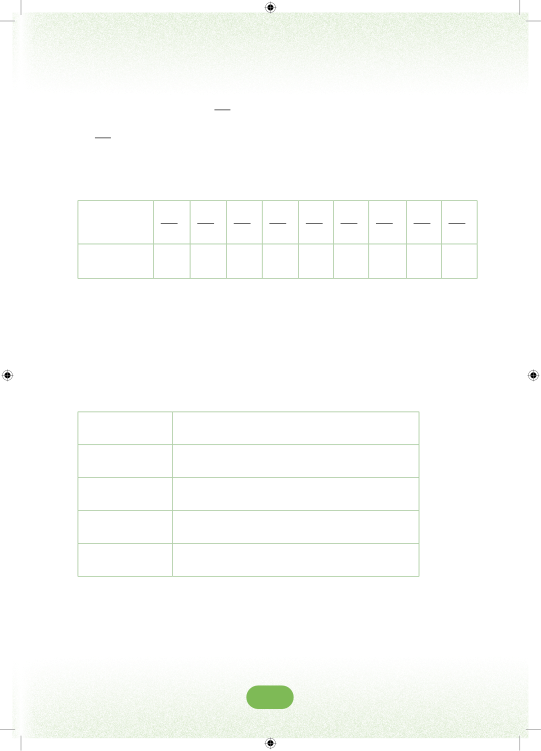

Umbo hili limegawanywa katika sehemu kumi zilizo sawa. Kila sehemu inawakilisha 110ya umbo zima.Sehemu iliyotiwa kivuli ni 110 na huandikwa 0.1 katika desimali. Namba 0.1 hupatikana baada ya kugawanya 1 kwa 10. Desimali zinazoweza kupatikana kutokana na mchoro huo ni:Sehemu110210310410510610710810910Desimali0.10.20.30.40.50.60.70.80.9Katika desimali, nukta inatenganisha namba nzima na namba ambayo ni sehemu ya kumi.Kusoma desimali Desimali zina nafasi moja au zaidi. Desimali husomwa kutoka kushoto kuelekea kulia. Kwa mfano.DesimaliInavyosomwa0.7sifuri nukta saba1.8moja nukta nane25.6ishirini na tano nukta sita250.1mia mbili hamsini nukta mojaDesimali zenye nafasi mbili zinaweza kufafanuliwa kwa kutumia mchoro ufuatao.